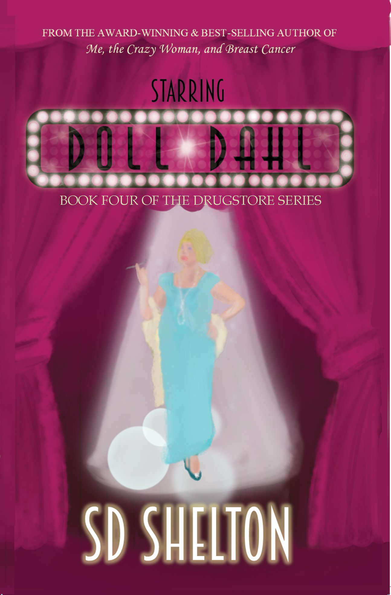
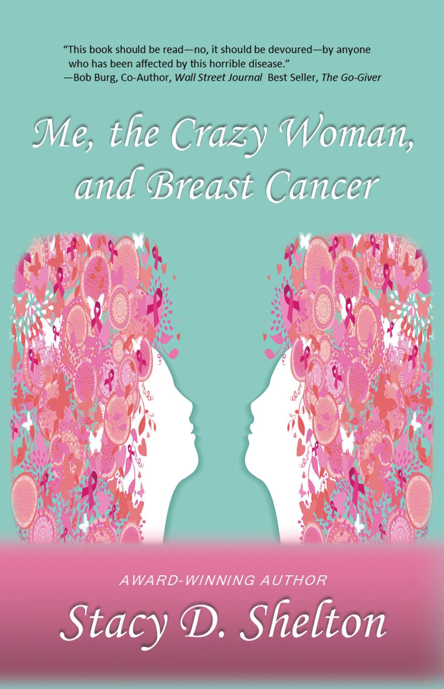

The Works of SD Shelton
Fiction

- The Drugstore
- In this coming-of-age story, fifteen-year-old Olivia Stephens works behind the soda fountain of a small-town drugstore in rural Oklahoma. Livy is surrounded by fascinating, quirky characters who frequent the town's social hub. Obsessed with boys and a master of self-inflicted drama, she manages to get herself and her grandmother right in the middle of the town's most notable mystery. Dreaming of the day she can leave her "podunk" town, she is oblivious to the impact the place will have on her life. The Drugstore is Book One in a series of pilgrimages through the inside workings of small-town life and the Southern, idiosyncratic and lovable people that make it what it is.

- The Life of old Pete
- Old Pete, a full-blood Cherokee Indian is over one hundred years old. In Book One of "The Drugstore" Series, he is introduced as a shop-lifting ne’er-do-well who resides in small-town Oklahoma. Book Two, "The Life of Old Pete," reveals that this ancient man is not at all what he seems. Born to parents who walked the Trail of Tears, and raised by medicine men uncles, Pete has layers deeper than the span of time. Able to commune with things unknown, and more comfortable with the “in-between” than the material world, this highly advanced soul plays an intricate part in helping the town’s inhabitants evolve. "The Life of Old Pete" is a mystical, spiritual journey through one hundred years of richly woven history. It will leave you asking yourself if things unrevealed, are more real than those that can be seen.

- Talking to Tubby
- Tubby Anderson is a mentally challenged pig farmer in rural Oklahoma. In Book One of The Drugstore Series, he is introduced as the foul-smelling, uncouth, and wannabe paramour of Livy Stephens. Book Three, Talking to Tubby, reveals that Tubby's facade is truly only skin deep. Gifted with a very unique ability, this boy-man has been entrusted to ensure the safekeeping of the animals on his farm. His own innocence regarding the world around him, means that those he cares for must return the favor ̶ especially when it comes time for Tubby to let them go. Talking to Tubby is a heartwarming and magical look at pure and unconditional love. It will convince you that the kind of goodness that can change the world, isn't always human and, it will remind you that, in judging a book by its cover, you might be forfeiting something miraculous.
- 
- Doll Dahl
- In Book One of The Drugstore Series, Doll Dahl is introduced as the eccentric, flamboyant, middle-aged woman who believes that she is actually a world renowned actress. Starring Doll Dahl tells the story of a normal, and beautiful, small town girl named Trudy Dahl. Trudy once had an idyllic life, before heart-breaking circumstances changed it all. The victim of childhood jealously, she must learn to navigate a difficult world alone. When she finds her passion in acting, she begins to find her place in the world. When she finds the love of her life, he becomes her world. Finally feeling like her life has meaning, Trudy is not prepared when it is all taken away. Starring Doll Dahl is a coming-of-age saga set in the 1930's and 1940's, when life, and love, were simpler. It is a poignant look into the realm of young love, and the life-altering effects it can leave in its wake.

- The Tinsleys
- In Book One of The Drugstore Series, the Tinsleys are introduced as the sometimes mischievous, mentally handicapped residents of Tinsley's Nursing Home. Originally, the residents are allowed to leave the home and roam their small town independently—that is until they began causing mayhem, and the townsfolk start complaining.While talk ensues about revoking their wandering privileges, unbeknownst to the nursing home staff, a small band of Tinsleys finds a way to circumvent any rules that might restrict their freedom. When in the middle of a scuffle with his nemesis, the group’s ringleader accidentally stumbles upon an escape route. The lovable friends start to use it to sneak out in the middle of the night, and enjoy imaginative adventures. By working together to remain undiscovered, they quickly realize that they are capable of more than they knew. "The Tinsleys" is a glimpse into the lives of those outside the mainstream, the bonds of friendship, and the beauty in getting to remain a child forever.
Non-fiction
- 
- Me, the Crazy Woman, and Breast Cancer
- Award-winning authors, cancer patients, survivors, and medical professionals, are all singing the praises of "Me, the Crazy Woman, and Breast Cancer" and Stacy Shelton.Named Oklahoma's Best Author for her book "Me, the Crazy Woman, and Breast Cancer," multi-award-winning former broadcast and print journalist Stacy Shelton, chronicles not one, but two diagnoses of breast cancer. Once diagnosed, Shelton found a new presence, which she dubbed "Crazy Woman," had taken up residence in her brain, wreaking havoc and forcing her to face her own mortality. As she learned to navigate the once foreign world of cancer, she realized that during the subsequent seven surgeries, including a bilateral mastectomy, several of her medical issues were falling through the cracks, leaving her even more vulnerable than she already was. Using her talents as a writer, she took the opportunity to bring to life this heroic, poignant, and enlightening work, to help others going through any life-altering trauma. "Me, the Crazy Woman, and Breast Cancer," provides a roadmap to an almost impossible journey, and gives the patient, survivor, family member, and loved one, a window into the psyche of someone facing a life-threating illness. It is a timeless, and hauntingly moving memoir that will leave you knowing all of life's lessons are to be cherished.